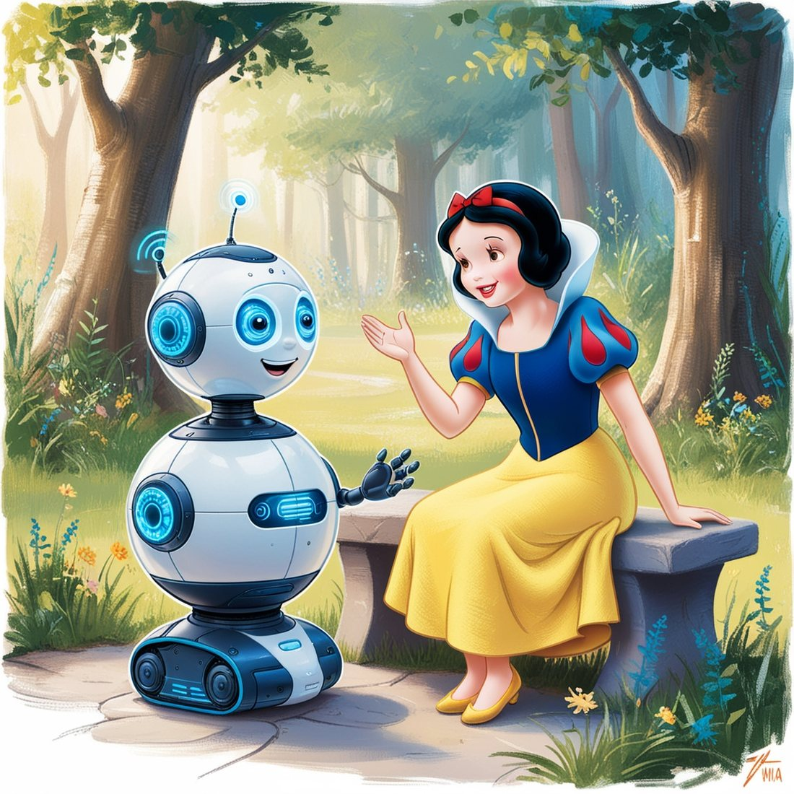
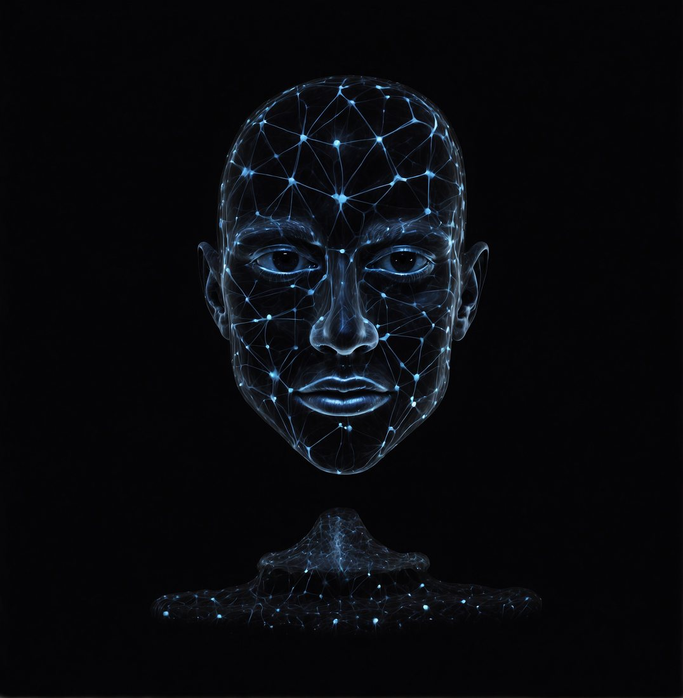
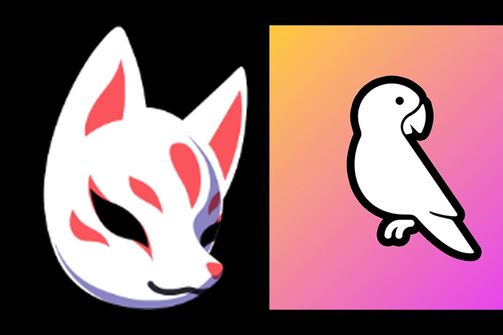
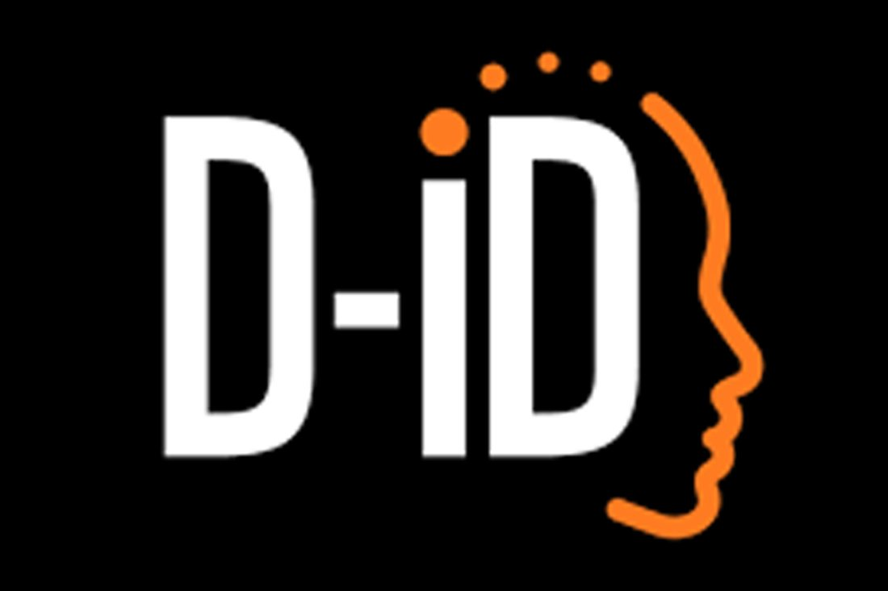
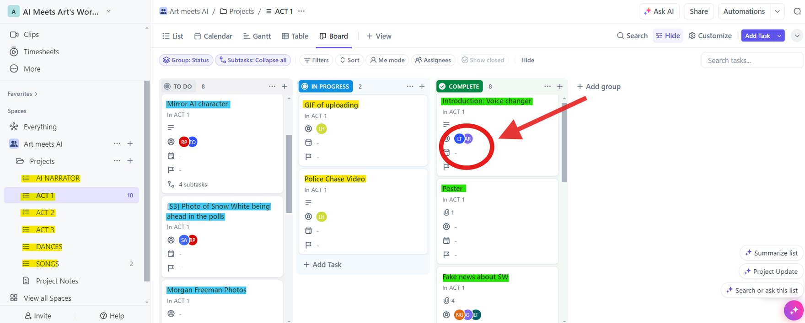
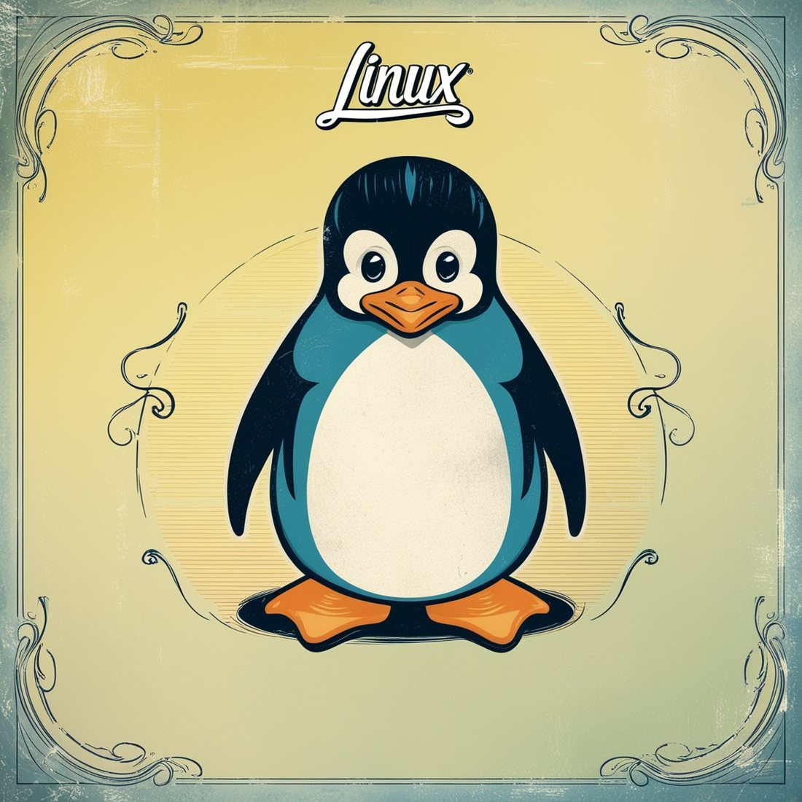

Art Meets AI · Materials
The AI tools behind the show
How each tool helped bring our theatre production to life, from music and scripts to voices, animations and project management, with our materials to download.
01
SoundRaw AI Music & sound
For Snow White’s coronation scene and throughout the performance, we used SoundRaw AI to generate a bespoke musical score that adds grandeur to the coronation and blends into the atmosphere of the whole show.
02
ChatGPT Dialogues
To bring the group’s original story to life, we used ChatGPT-4 to turn the narrative into a full script with detailed dialogues and stage directions, giving the actors a polished script for rehearsals and the performance.

03
Leonardo AI Images
Leonardo AI generated the images we used in videos and animations, including the poster that captures the essence of the story, defining the look of the whole show.

04
FakeYou & Parrot AI Voices
To give our characters distinct, memorable voices, we used FakeYou to create a range of expressive voices and Parrot AI for voice modulation and adaptation.

05
D-ID Animations
With D-ID we animated images from Leonardo AI and synchronised them with voices from Parrot AI, so faces moved and spoke the dialogue. D-ID produced all the narrator videos, the Evil Billionaire scene, the Mirror on the Wall and several other key moments.

06
ClickUp Agile project management
To manage the production we used ClickUp with an agile method, as used across the IT world. Each task had a description, an owner and the tool to use, and moved through three columns: To Do, In Progress and Completed. Materials produced for each task went into its comments.
We kept separate backlogs for each act, the narrator, the music and the dances.

07
A retro terminal narrator Linux & Python
We set up a Linux virtual machine in VirtualBox and wrote a Python script that printed the narration in Cool Retro Term, giving us precise control of the narrator throughout the show.
The narrator starts as a simple, primitive entity in the early scenes and grows more complex until it dominates by the end of Act 3, tracking its rising influence over the story.

Videos come from YouTube (Google) and load only when you press play. How we handle this
All production materials
Explore and download all the materials for the play.